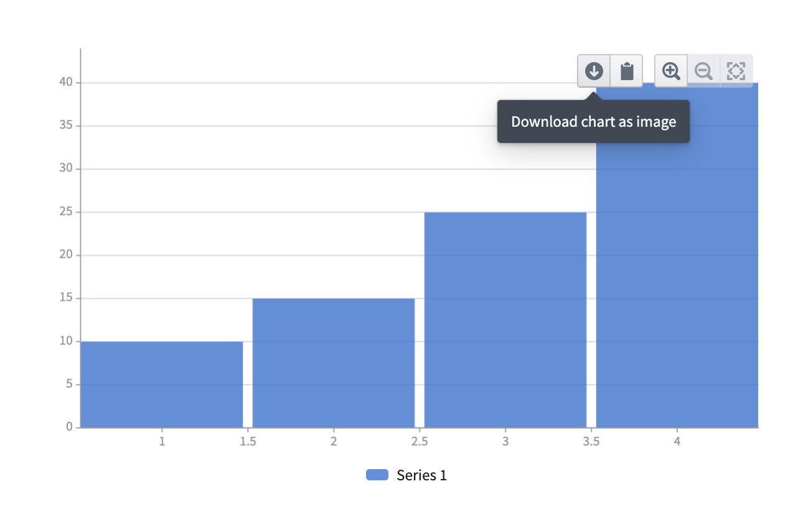
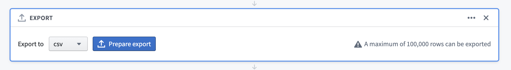
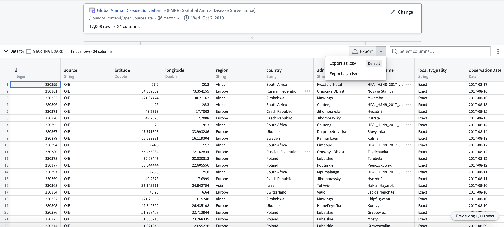
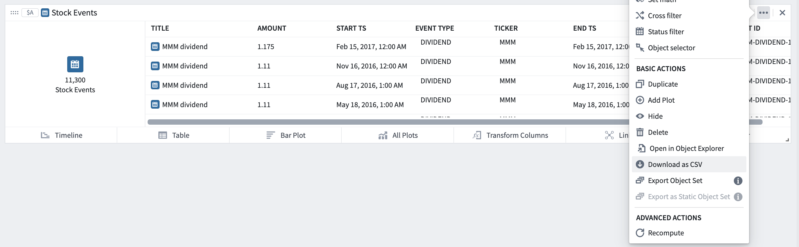
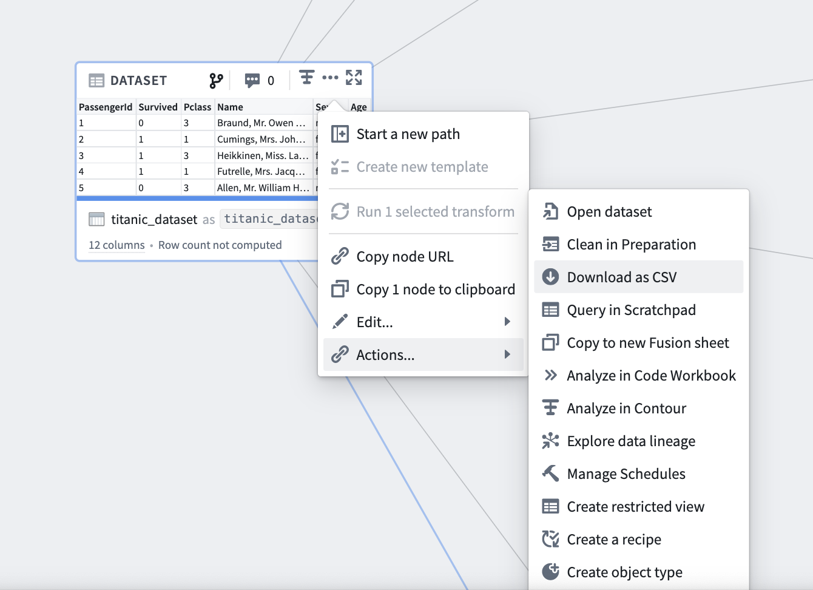

button (Download chart as image) in the top right of any chart, as shown below.
button (Download chart as image) in the top right of any chart, as shown below.Foundry allows qualified users to export analytical outputs for use off-platform.
Supported exports include PDF export, export of visualizations as images, and export as CSV or XLSX.
Notepad supports downloading documents to PDF with the ability to customize content such as page orientation, headers and footers, and individual embed (charts, tables, etc.) appearance.
Learn how to get started with Notepad.
You can export individual visualizations as images in Contour, Quiver, and Code Workbook.
In Contour and Quiver, look for the button (Download chart as image) in the top right of any chart, as shown below.

In Code Workbook, choose Download image from the action menu of any visualization node as shown below.

You can export analytical results as CSV and/or XLSX in Contour, Quiver, and Code Workbook.
There are two ways to export data from Contour, both of which have an export limit of 100,000 rows:


To export data from a Quiver analysis, select Download as CSV from the action menu for any card.

To export data from a Code Workbook, select Download as CSV from the action menu for transforms that are saved as datasets. The default export limit is 100,000 rows. Note that the results of unpersisted transforms cannot be downloaded as CSV. Learn more about persisted and unpersisted transforms in Code Workbook.
